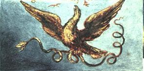
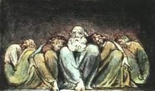

Cehennemde bir Basımevindeydim ve bilginin kuşaktan kuşağa aktarıldığı yöntemi gördüm.
Birinci odada, bir dolu Ejderhanın oyuyor olduğu mağaranın ağzındaki süprüntüyü temizleyen, bir Ejderha-Adam vardı.
İkinci odada, diğerlerinin altın, gümüş ve değerli taşlarla süsledikleri, kayaya ve mağaranın etrafına dolanmış bir Engerek duruyordu.
Üçüncü odadaki, kanatları ve tüyleri hava olan bir kartaldı ki, mağaranın içindeki sonsuzluğun nedeniydi. Çevrede bir dolu, uçsuz bucaksız uçurumlar üzerine saraylar inşa eden, Kartal-benzeri adam vardı.
Dördüncü odada, madenleri eriterek canlı sıvılara dönüştüren, yalazlı ateşlerden Aslanlar öfkeyle dolaşıyordu.
Beşinci odadakiler, metalleri geniş kaplara döken İsimsiz biçimlerdi.
Bunlar, altıncı odayı dolduran İnsanlarca alınıp kitap biçimine sokuluyor ve kütüphanelere diziliyordu.


Bu dünyayı kendi duyusal varoluşu içinde biçimlendiren ve şu an onun içinde zincire vurulmuş olarak yaşıyor görünen Devler, gerçekte dünyadaki dirimin nedenleri ve tüm canlılığın kaynaklarıdırlar. Lâkin zincirler, enerjiye karşı direnme gücü taşıyan zayıf ve uysal zihinlerin kurnazlığıdır ki, mesele göre, cesareti az olan şeytanlıkta ustadır.
Bu yüzden, varlığın bir kısmı Doğurgan, diğer kısmıysa Yokedicidir. Yokeden için, vareden zincire vurulmuş gibidir, oysa böyle değildir bu, o sadece varoluştan paylar alır ve bunu bütün sanır.
Eğer ki Yokeden, bir deniz misâli, hazlarının fazlasını kabul etmezse, Doğurgan Doğurganlıktan kesilecektir.
Bazıları şöyle diyecektir: ‘Tanrı tek Doğurgan değil midir?’ Yanıtlayayım: ‘Tanrı sadece Eyler ve Vardır, varolan varlıklarda ya da İnsanlarda.’
Bu iki tür insan daima yeryüzündedir ve düşman olmaları gerekir; her kim ki onları uzlaştırmaya çalışır, varoluşu yok etmek istiyor demektir.
Din, bu ikisini uzlaştırma çabasıdır.
Not: İsa Mesih onları birleştirmek değil, koyunlar ve keçiler Meselinde olduğu gibi, ayırmak istedi ve şöyle dedi: ‘Barış değil, kılıç getirmeye geldim.’
Mesih ya da Şeytan, ya da Baştan Çıkarıcı, enerjilerimizin kaynağı olan Tufan-öncesi varlıkların biri gibi düşünülürdü eskiden.